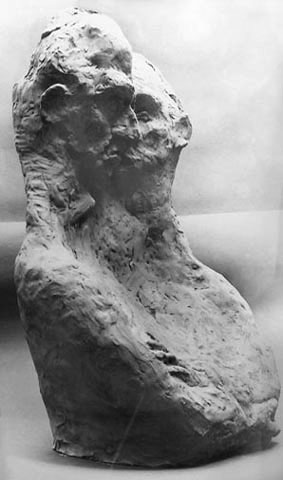
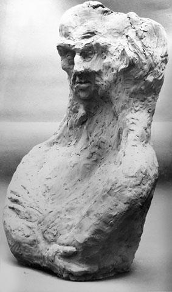
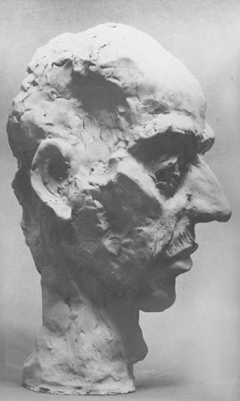
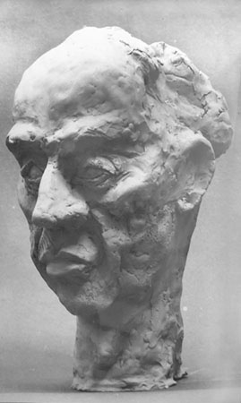
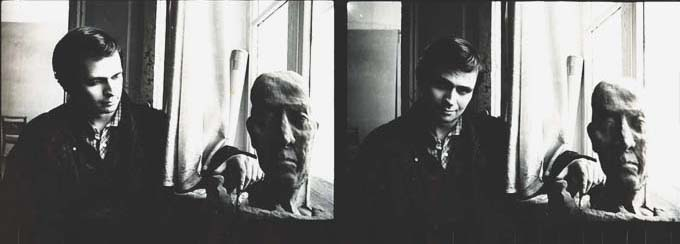

Alongside his painting practice, Kantor has produced a body of sculptural work — figures, heads, and reliefs — that engage the same themes of dignity, suffering, and the human condition explored throughout his canvases.

Father and Son

Father and Son

Portrait of Father

Portrait of K. Kantor

Portrait of K. Kantor

Sculptures